Chassis profile
The 2018 iPhone XS Max is a 6.5-inch Lightning model. Large OLED model with longer flex routing and more room for bracket handling.
Model-Specific Tutorial
This iPhone XS Max screen guide is written as a standalone bench page. It explains the 2018 6.5-inch chassis, the parts most likely to be damaged, and the checks to make before the phone is sealed again.

Model Notes
The 2018 iPhone XS Max is a 6.5-inch Lightning model. Large OLED model with longer flex routing and more room for bracket handling.
This page focuses on how to separate the display adhesive, protect display and sensor flex cables, move any required small parts, and test the panel before sealing. The 33 photo steps are kept in bench order so the screw table and the visible part position stay aligned.
Keep P2 pentalobe driver, Y000 driver, suction handle ready first, then add opening picks, heat source, spudger as the phone opens.
After the repair, inspect touch response, brightness, True Tone where available, Face ID or sensor behavior, earpiece sound, and clean frame seating. If anything fails, reopen before adhesive pressure makes the correction harder.
Quick Answer
Yes, a iPhone XS Max screen repair is possible when the exact model is matched first, the battery is safely discharged, and every bracket screw is kept in its original location. This guide covers 33 photo checkpoints from Handle the pentalobe screws through Separate the adhesive.
The most important checks are display flex cables, top sensor hardware, waterproof adhesive, and mixed-length bracket screws. For US repair searches, this page connects the 2018 6.5-inch Lightning model, common symptoms, photo sequence, screw table, and closing tests in one crawlable guide.
Start Here
Use this iPhone XS Max guide for cracked glass, black display, green lines, ghost touch, or failed touch response. The photos are arranged as a practical bench sequence so you can stop after each action and compare the part position.
Large OLED model with longer flex routing and more room for bracket handling. For this screen repair, watch display flex cables, top sensor hardware, waterproof adhesive, and mixed-length bracket screws.
Check touch response, brightness, True Tone where available, Face ID or sensor behavior, earpiece sound, and clean frame seating. This final check matters more on iPhone XS Max because large OLED model with longer flex routing and more room for bracket handling.
US Repair Search Notes
This guide is written for US repair searches around iPhone XS Max screen replacement cost, cracked iPhone glass repair, black screen repair, green line display repair, and touch failure troubleshooting. It keeps the model name, repair type, symptom, and part checks together on one page.
Before ordering parts, match the exact iPhone XS Max generation, 6.5-inch display size, Lightning connector style, and the display assembly, touch response, OLED panel behavior, Face ID sensor area, and waterproof adhesive mentioned in this guide.
Pay extra attention to step 1 (Handle the pentalobe screws), step 11 (Screen information), and step 32 (Warm the adhesive edge). These photos usually decide whether the repair stays clean or needs to be reopened.
A successful iPhone XS Max screen repair should pass the closing checks, sit flush around the frame, and show no new warnings, loose brackets, lifted adhesive, or cable pressure marks.
Step By Step
Follow these 33 photos in order. Each iPhone XS Max step includes a model note, the action from the photo, and a risk check for the screen repair.
iPhone XS Max note: iPhone XS Max screw note: record this location before lifting the part. 6.5-inch models can reuse similar screw colors with different lengths.
Before you begin, discharge your iPhone battery below 25%. A charged lithium-ion battery can catch fire and/or explode if accidentally punctured. Power off your iPhone before beginning disassembly. Remove the two 6.9 mm-long pentalobe screws at the bottom edge of the iPhone. Opening the iPhone's display will compromise its waterproof seals. Have replacement seals ready before you proceed past this step, or take care to avoid liquid exposure if you reassemble your iPhone without replacing the seals.
Screw rule: return each screw to the exact screen step location; a long screw in the wrong hole can damage the board.

iPhone XS Max note: iPhone XS Max display note: support the panel at a shallow angle so the 2018 flex routing is not pulled.
If inserted too far, an opening pick can damage your device. Follow this step to mark your pick and prevent damage. Measure 3 mm from the tip and mark the opening pick with a permanent marker. You can also mark the other corners of the pick with different measurements. Alternatively, tape a coin to a pick 3 mm from the tip.
Part rule: keep the removed part, bracket, and screws together until the matching reassembly step.

iPhone XS Max note: iPhone XS Max display note: support the panel at a shallow angle so the 2018 flex routing is not pulled.
If your iPhone has a cracked screen, keep further breakage contained and prevent bodily harm during your repair by taping over the glass. Lay overlapping strips of clear packing tape over the iPhone's screen until the whole face is covered. Wear safety glasses to protect your eyes from any glass shaken free during the repair. If you can't get the suction cup to stick in the next few steps, fold a strong piece of tape (such as duct tape) into a handle and lift the screen with that instead. If all else fails,...
Part rule: keep the removed part, bracket, and screws together until the matching reassembly step.

iPhone XS Max note: iPhone XS Max display note: support the panel at a shallow angle so the 2018 flex routing is not pulled.
Use a suction handle or opening clamp to gently lift the edge of the display. Keep the suction cups aligned near the bottom edge, apply steady pressure, and use tape if the glass is too slippery.
Part rule: keep the removed part, bracket, and screws together until the matching reassembly step.

iPhone XS Max note: iPhone XS Max display note: support the panel at a shallow angle so the 2018 flex routing is not pulled.
Apply steady lifting pressure with the suction handle until the adhesive begins to separate. Keep the cups aligned and adjust the tool if it slips.
Adhesive rule: reheat and work shallow. On iPhone XS Max, forcing a cold edge can bend clips or mark the frame.

iPhone XS Max note: iPhone XS Max display note: support the panel at a shallow angle so the 2018 flex routing is not pulled.
Apply heat to the lower edge for about one minute, then insert an opening pick under the screen bezel once a small gap appears. Work slowly and add more heat if the adhesive remains tight.
Adhesive rule: reheat and work shallow. On iPhone XS Max, forcing a cold edge can bend clips or mark the frame.

iPhone XS Max note: iPhone XS Max display note: support the panel at a shallow angle so the 2018 flex routing is not pulled.
Heating the lower edge of the iPhone helps soften the adhesive securing the display, making it easier to open. Use a hairdryer or heat gun or prepare a heat pack and apply it to the lower edge of the iPhone for about a minute in order to soften up the adhesive underneath.
Adhesive rule: reheat and work shallow. On iPhone XS Max, forcing a cold edge can bend clips or mark the frame.
iPhone XS Max note: iPhone XS Max display note: support the panel at a shallow angle so the 2018 flex routing is not pulled.
If you're using a single suction handle, apply it to the bottom edge of the phone, while avoiding the curved portion of the glass.
Part rule: keep the removed part, bracket, and screws together until the matching reassembly step.
iPhone XS Max note: iPhone XS Max display note: support the panel at a shallow angle so the 2018 flex routing is not pulled.
Pull up on the suction cup with firm, constant pressure to create a slight gap between the front panel and rear case. Insert an opening pick into the gap under the , not the screen itself. The watertight adhesive holding the display in place is very strong; creating this initial gap takes a significant amount of force. If you're having a hard time opening a gap, apply more heat, and gently rock the screen up and down to weaken the adhesive until you create enough of a gap to insert your tool.
Adhesive rule: reheat and work shallow. On iPhone XS Max, forcing a cold edge can bend clips or mark the frame.
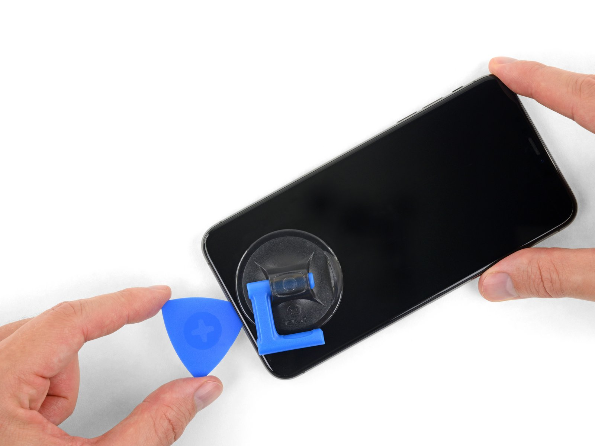
iPhone XS Max note: iPhone XS Max display note: support the panel at a shallow angle so the 2018 flex routing is not pulled.
Slide the opening pick around the lower left corner and up the left edge of the iPhone, slicing through the adhesive holding the display in place. Don't insert your pick more than 3 mm, as you may damage the internal components.
Adhesive rule: reheat and work shallow. On iPhone XS Max, forcing a cold edge can bend clips or mark the frame.
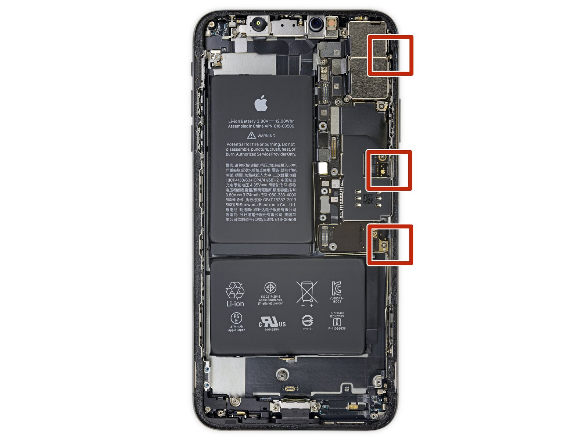
iPhone XS Max note: iPhone XS Max display note: support the panel at a shallow angle so the 2018 flex routing is not pulled.
There are delicate cables along the right edge of your iPhone. Don't insert your pick here, as you may damage the cables.
Part rule: keep the removed part, bracket, and screws together until the matching reassembly step.
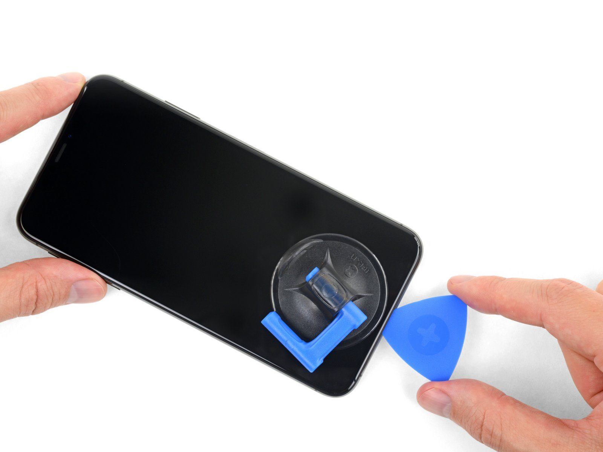
iPhone XS Max note: iPhone XS Max display note: support the panel at a shallow angle so the 2018 flex routing is not pulled.
Re-insert your pick at the bottom edge of the iPhone, and slide it up the right side to continue separating the adhesive. Don't insert your pick more than 3 mm, as you may damage the display cables.
Adhesive rule: reheat and work shallow. On iPhone XS Max, forcing a cold edge can bend clips or mark the frame.
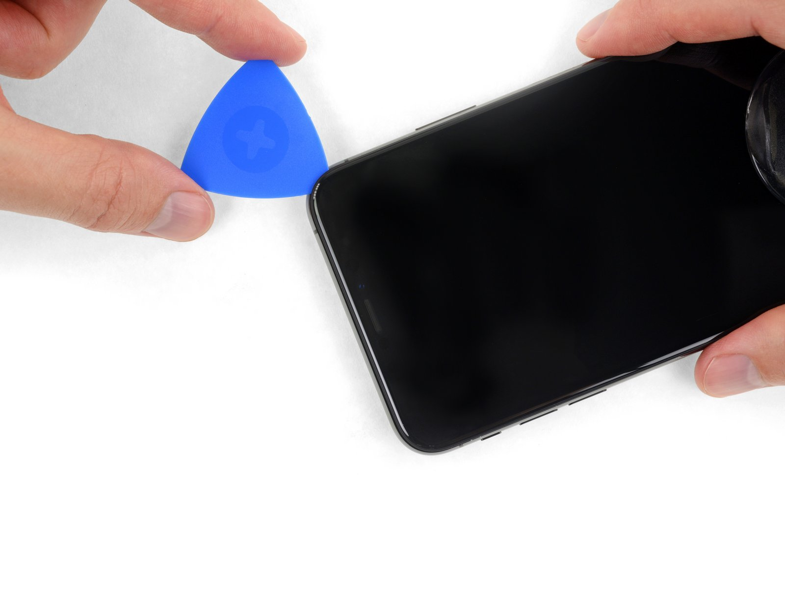
iPhone XS Max note: iPhone XS Max display note: support the panel at a shallow angle so the 2018 flex routing is not pulled.
The top edge of the display is secured with both glue and clips. Slide the opening pick around the top corner of the display, while gently pulling or wiggling the display down in the direction of the Lightning port. The clips will break if you use too much force. Work carefully and be patient. Don't insert your pick more than 3 mm, as you may damage the front panel sensor array. Slide the pick to the opposite corner and cut any remaining adhesive securing the display.
Adhesive rule: reheat and work shallow. On iPhone XS Max, forcing a cold edge can bend clips or mark the frame.
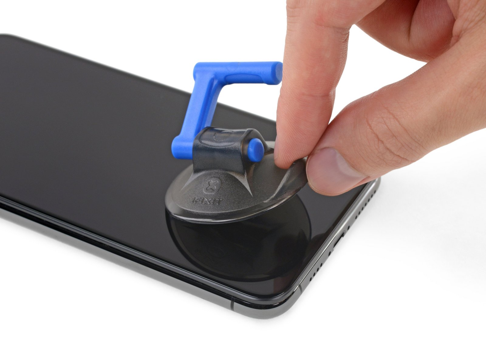
iPhone XS Max note: iPhone XS Max display note: support the panel at a shallow angle so the 2018 flex routing is not pulled.
Pull on the small nub on the suction cup to remove it from the front panel.
Part rule: keep the removed part, bracket, and screws together until the matching reassembly step.
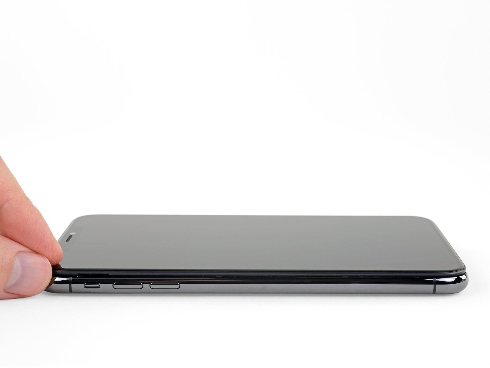
iPhone XS Max note: iPhone XS Max display note: support the panel at a shallow angle so the 2018 flex routing is not pulled.
Open the iPhone by swinging the display up from the left side, like the back cover of a book. Don't try to fully separate the display yet, as several fragile ribbon cables still connect it to the iPhone's logic board. Lean the display against something to keep it propped up while you're working on the phone. During reassembly, lay the display in position, align the clips along the top edge, and carefully press the top edge into place before snapping the rest of the display down....
Part rule: keep the removed part, bracket, and screws together until the matching reassembly step.
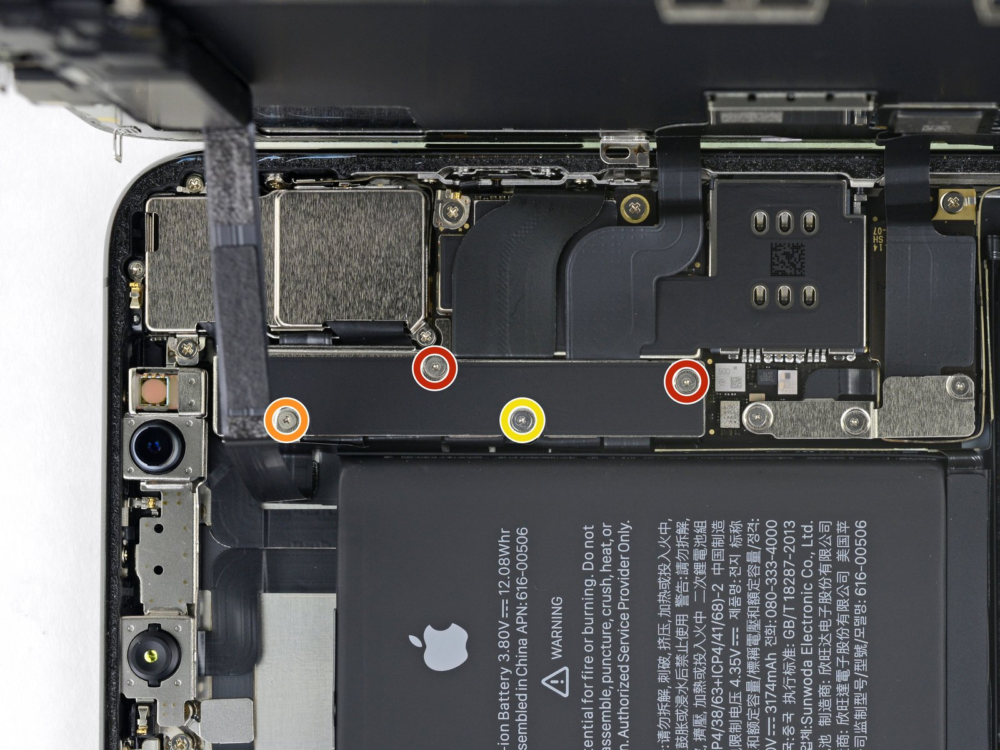
iPhone XS Max note: iPhone XS Max display note: support the panel at a shallow angle so the 2018 flex routing is not pulled.
Remove four Y000 screws securing the logic board cover bracket, of the following lengths: Two 1.1 mm screws One 1.5 mm screw One 3.7 mm screw Throughout this repair, keep track of each screw and make sure it goes back exactly where it came from to avoid damaging your iPhone.
Part rule: keep the removed part, bracket, and screws together until the matching reassembly step.
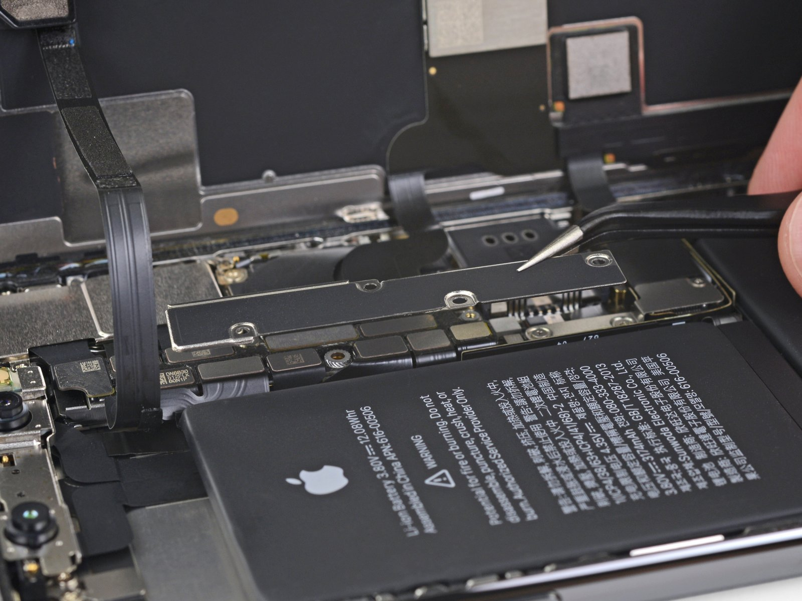
iPhone XS Max note: iPhone XS Max display note: support the panel at a shallow angle so the 2018 flex routing is not pulled.
Remove the bracket. The bracket may be lightly adhered in place. Lift gently but firmly to separate it. During reassembly, this is a good point to power on your iPhone and test all functions before you seal the display in place. Be sure to power your iPhone back down completely before you continue working.
Part rule: keep the removed part, bracket, and screws together until the matching reassembly step.
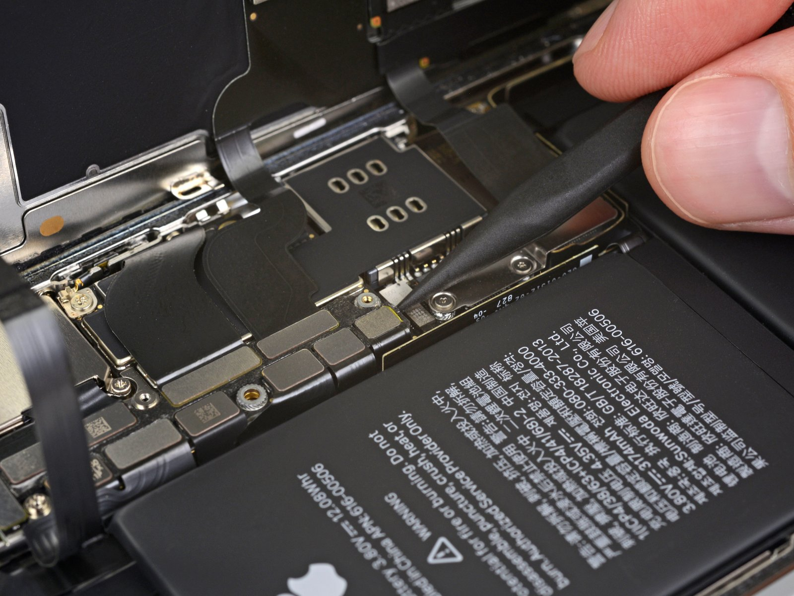
iPhone XS Max note: iPhone XS Max display note: support the panel at a shallow angle so the 2018 flex routing is not pulled.
Use a spudger or a clean fingernail to pry the battery connector up from its socket on the logic board. Try not to damage the black silicone seal surrounding this and other board connections. These seals provide extra protection against water and dust intrusion. Bend the connector slightly away from the logic board to prevent it from accidentally making contact with the socket and providing power to the phone during your repair.
Part rule: keep the removed part, bracket, and screws together until the matching reassembly step.
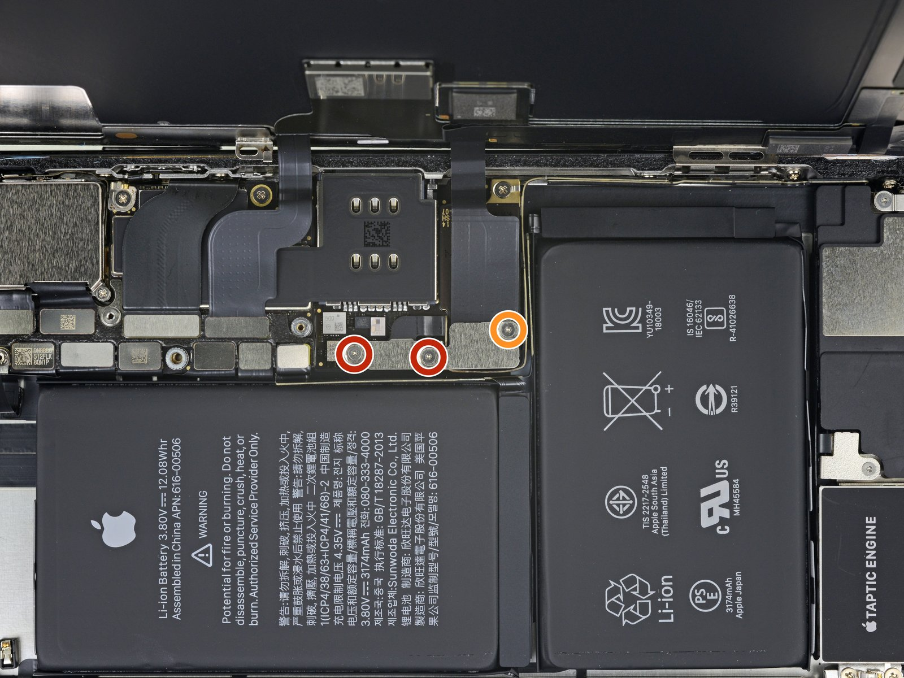
iPhone XS Max note: iPhone XS Max display note: support the panel at a shallow angle so the 2018 flex routing is not pulled.
Remove the three Y000 screws securing the display connector bracket: Two 1.5 mm screws One 1.1 mm screw
Part rule: keep the removed part, bracket, and screws together until the matching reassembly step.
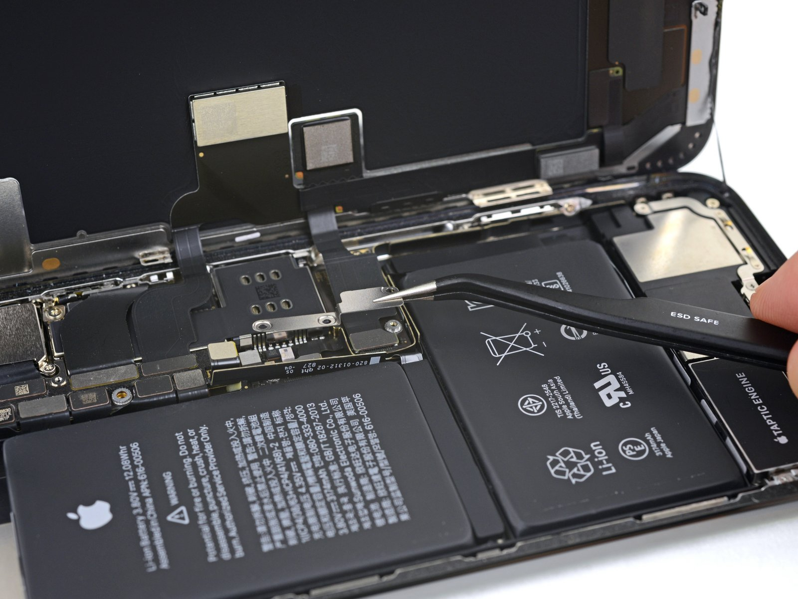
iPhone XS Max note: iPhone XS Max display note: support the panel at a shallow angle so the 2018 flex routing is not pulled.
Remove the bracket.
Part rule: keep the removed part, bracket, and screws together until the matching reassembly step.
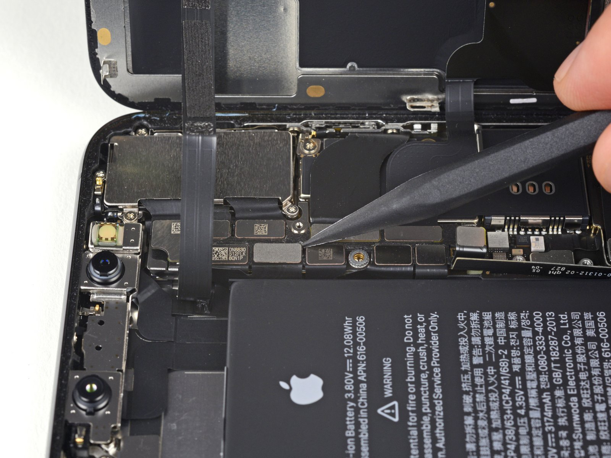
iPhone XS Max note: iPhone XS Max display note: support the panel at a shallow angle so the 2018 flex routing is not pulled.
Use the point of a spudger or a fingernail to disconnect the front panel sensor assembly connector.
Connector rule: align over the socket first, then press from one side and the other. Do not press the middle if it feels misaligned.
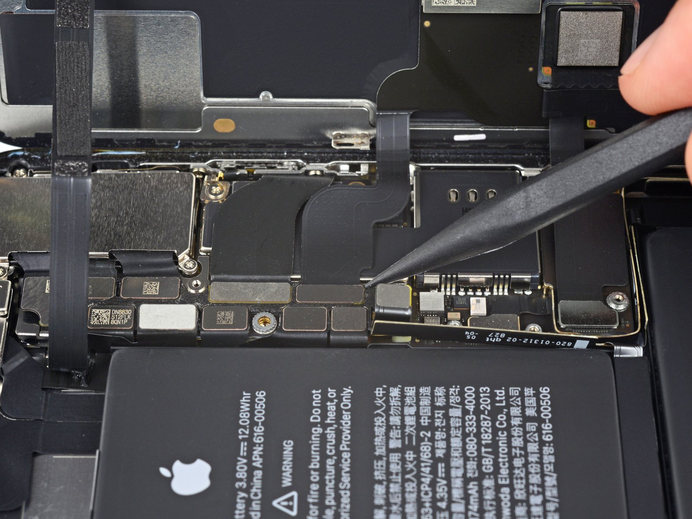
iPhone XS Max note: iPhone XS Max display note: support the panel at a shallow angle so the 2018 flex routing is not pulled.
Use a spudger or a fingernail to disconnect the OLED panel cable connector. To re-attach press connectors like this one, carefully align and press down on one side until it clicks into place, then repeat on the other side. Do not press down on the middle. If the connector is misaligned, the pins can bend, causing permanent damage.
Connector rule: align over the socket first, then press from one side and the other. Do not press the middle if it feels misaligned.
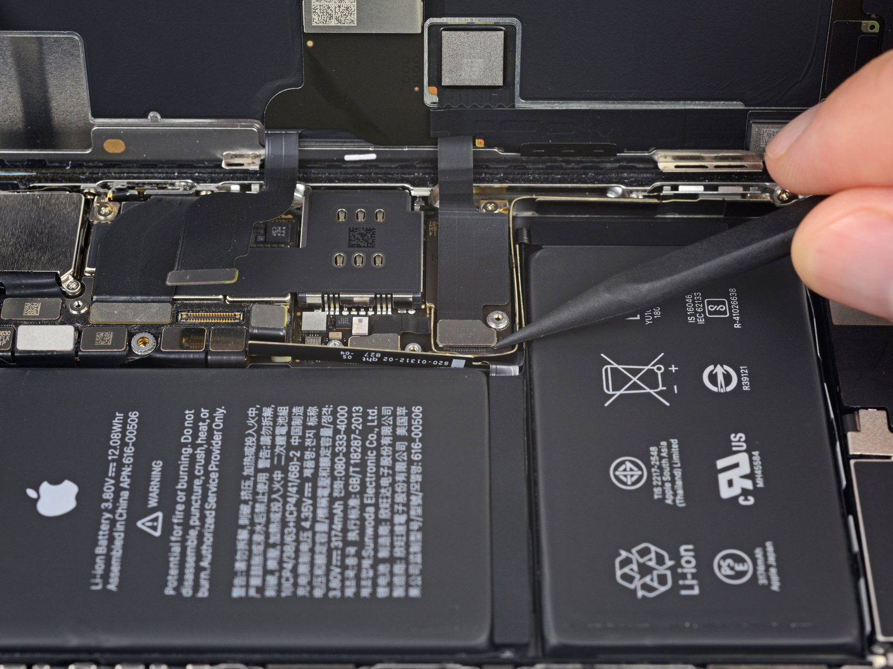
iPhone XS Max note: iPhone XS Max display note: support the panel at a shallow angle so the 2018 flex routing is not pulled.
Use a spudger or fingernail to pry the digitizer cable connector up from its socket. If any part of your screen doesn't respond to touch after your repair, disconnect the battery and then re-seat this connector, making sure it clicks fully into place and that there's no dust or other obstruction in the socket.
Connector rule: align over the socket first, then press from one side and the other. Do not press the middle if it feels misaligned.
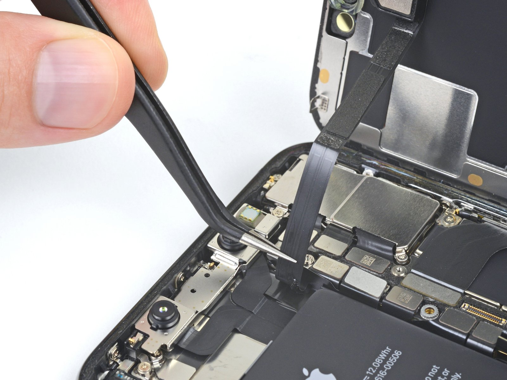
iPhone XS Max note: iPhone XS Max display note: support the panel at a shallow angle so the 2018 flex routing is not pulled.
The front panel sensor assembly flex cable is lightly adhered in place. Carefully lift the cable until the adhesive separates.
Adhesive rule: reheat and work shallow. On iPhone XS Max, forcing a cold edge can bend clips or mark the frame.
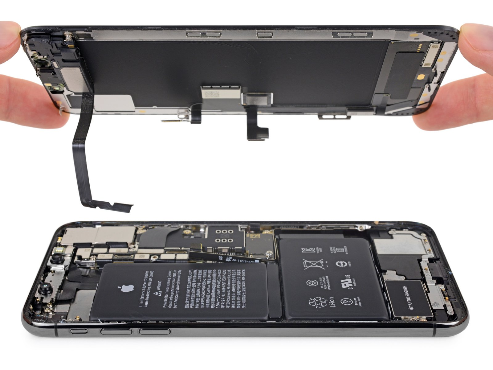
iPhone XS Max note: iPhone XS Max display note: support the panel at a shallow angle so the 2018 flex routing is not pulled.
Remove the display assembly. During reassembly, pause here if you wish to replace the waterproof adhesive around the edges of the display.
Adhesive rule: reheat and work shallow. On iPhone XS Max, forcing a cold edge can bend clips or mark the frame.
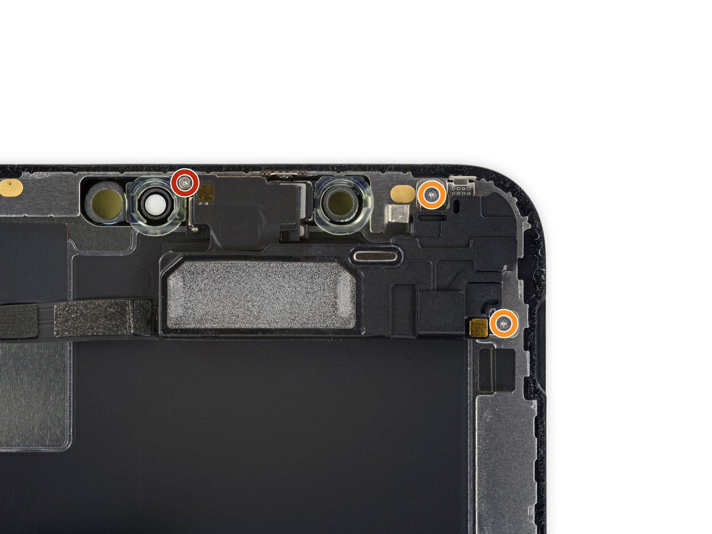
iPhone XS Max note: iPhone XS Max display note: support the panel at a shallow angle so the 2018 flex routing is not pulled.
Remove the three Y000 screws securing the speaker/sensor assembly: One 1.4 mm screw Two 1.5 mm screws
Part rule: keep the removed part, bracket, and screws together until the matching reassembly step.
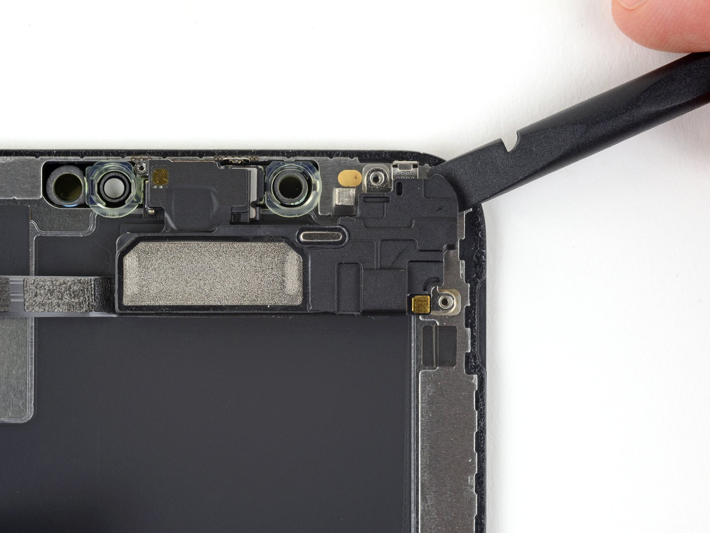
iPhone XS Max note: iPhone XS Max display note: support the panel at a shallow angle so the 2018 flex routing is not pulled.
The earpiece speaker is lightly adhered in place. Using a spudger, gently pry under the top edge of the speaker assembly, and flip it over down and away from the top edge of the display. The speaker remains attached via a very thin ribbon cable. Be careful not to strain or damage the cable.
Part rule: keep the removed part, bracket, and screws together until the matching reassembly step.
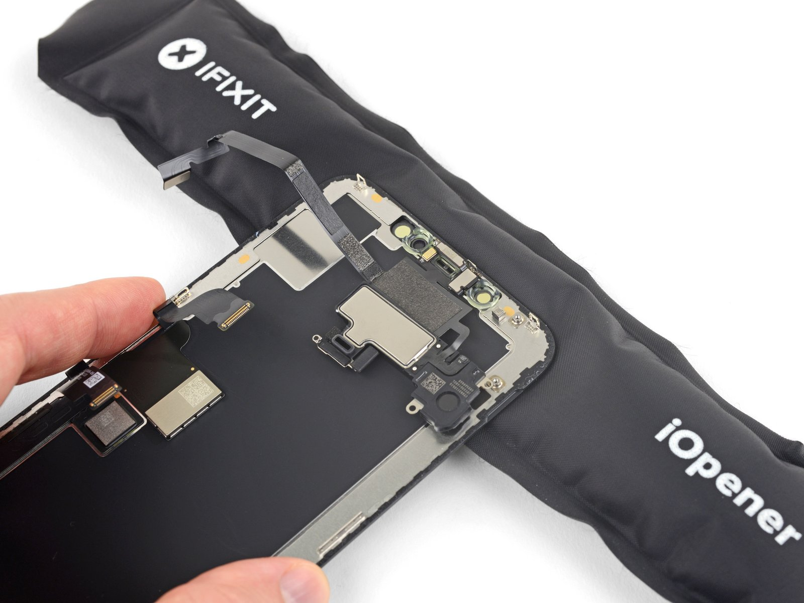
iPhone XS Max note: iPhone XS Max display note: support the panel at a shallow angle so the 2018 flex routing is not pulled.
Use a hairdryer or heat gun or prepare a heat pack and apply it to the top front of the display for 1-2 minutes, in order to soften the adhesive securing the sensors.
Adhesive rule: reheat and work shallow. On iPhone XS Max, forcing a cold edge can bend clips or mark the frame.
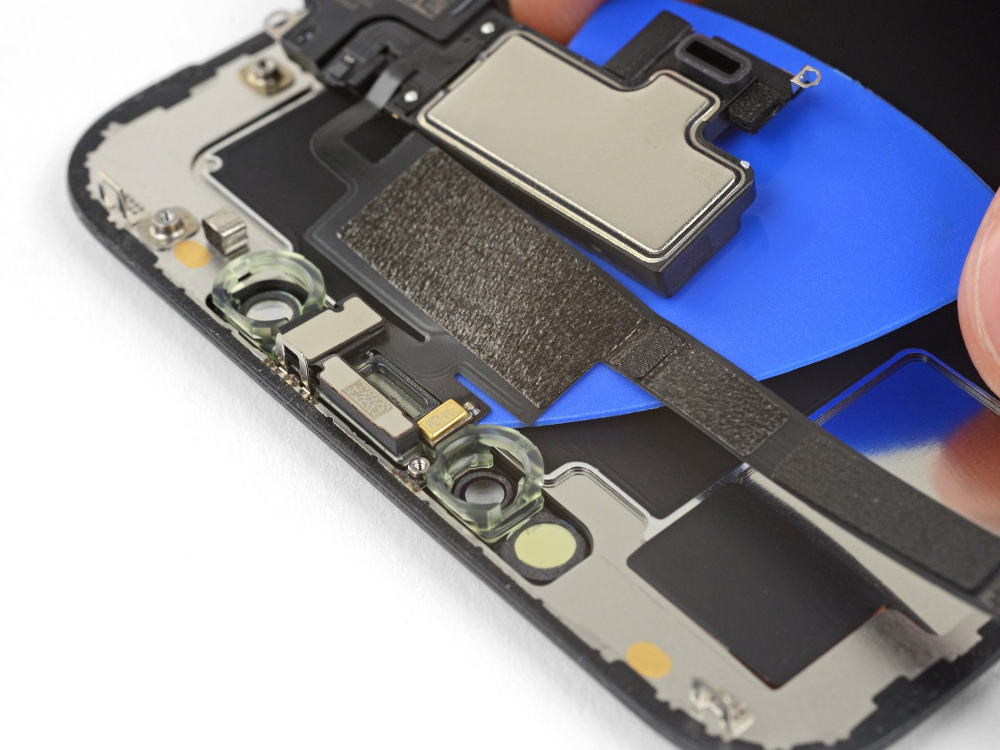
iPhone XS Max note: iPhone XS Max display note: support the panel at a shallow angle so the 2018 flex routing is not pulled.
Carefully slide the edge of your opening pick underneath the flex cable below the microphone. Twist gently to separate the microphone, while being careful not to strain or damage the flex cable. If needed, use the point of the spudger to finish separating the microphone from its notch in the front panel.
Part rule: keep the removed part, bracket, and screws together until the matching reassembly step.
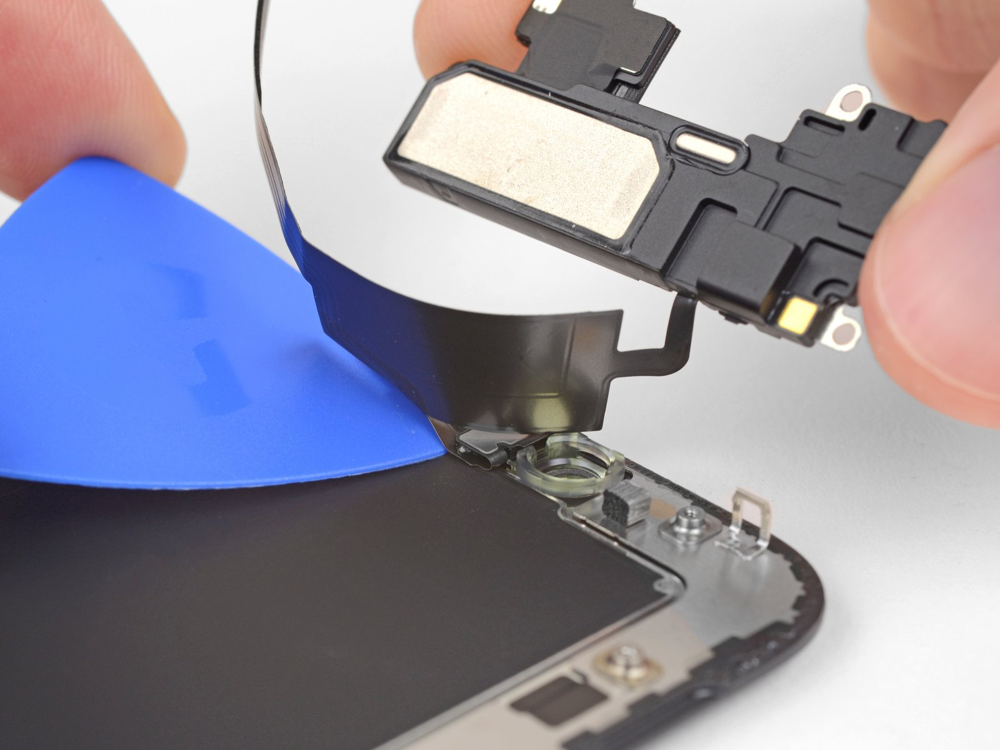
iPhone XS Max note: iPhone XS Max display note: support the panel at a shallow angle so the 2018 flex routing is not pulled.
Working left to right, slide an opening pick beneath the flex cable and underneath the proximity sensor + flood illuminator module. Gently wiggle and lift to separate the module from its notch in the front panel. It's helpful to lift and hold the speaker out of the way for access. Just be careful not to pull on the thin flex cable while you work.
Part rule: keep the removed part, bracket, and screws together until the matching reassembly step.
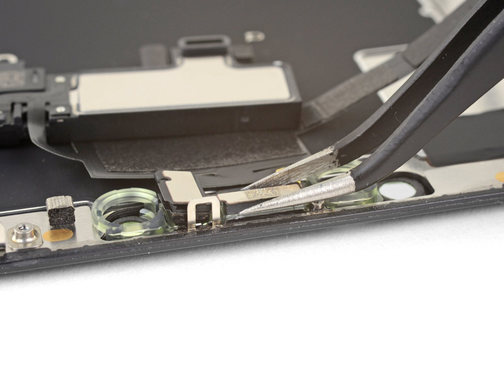
iPhone XS Max note: iPhone XS Max display note: support the panel at a shallow angle so the 2018 flex routing is not pulled.
Use tweezers to wiggle the ambient light sensor and lift it from its notch in the display. If the sensor does not wiggle free after a few seconds, apply more heat and try again. The sensor remains attached to the rest of the sensor assembly via a very thin ribbon cable. Be careful not to strain or damage the cable.
Adhesive rule: reheat and work shallow. On iPhone XS Max, forcing a cold edge can bend clips or mark the frame.
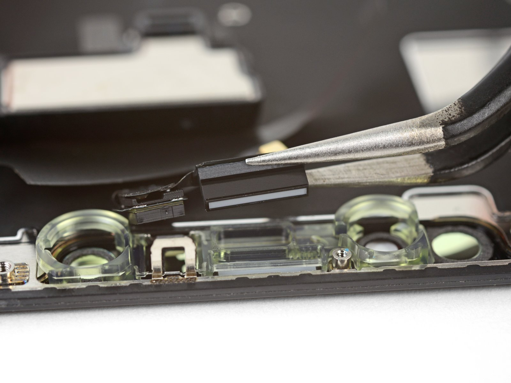
iPhone XS Max note: iPhone XS Max display note: support the panel at a shallow angle so the 2018 flex routing is not pulled.
If you successfully removed the entire ambient light sensor, as shown in the first photo, continue to the next step below. If the white diffuser strip detached and remains embedded in the display, as shown in the second photo, you will need to carefully lever it out along the top edge using a thin blade or pry tool. Re-applying heat first may make this task a bit easier. During reassembly, install the diffuser into the display first,...
Adhesive rule: reheat and work shallow. On iPhone XS Max, forcing a cold edge can bend clips or mark the frame.
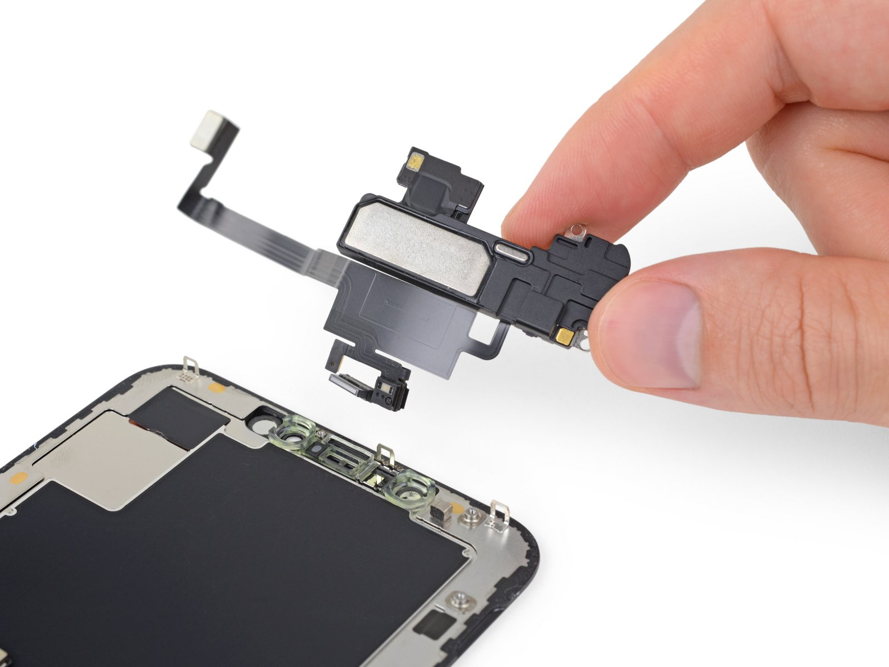
iPhone XS Max note: iPhone XS Max display note: support the panel at a shallow angle so the 2018 flex routing is not pulled.
Remove the earpiece speaker and front sensor assembly. During reassembly, check the position of the black plastic module containing these components: Proximity sensor Flood illuminator The module must be positioned so that these components are not obstructed by any adhesive.
Adhesive rule: reheat and work shallow. On iPhone XS Max, forcing a cold edge can bend clips or mark the frame.
Screw Map
Use this table as the iPhone XS Max screw map for the screen job. If a row mentions a bracket, keep that bracket and its screws together until reassembly.
| Repair step | Photo marker | Screw note and length |
|---|---|---|
| Step 216542 | red | Remove the two 6.9 mm-long pentalobe screws at the bottom edge of the iPhone. |
| Step 217031 | red | Two 1.1 mm screws |
| Step 217031 | orange | One 1.5 mm screw |
| Step 217031 | yellow | One 3.7 mm screw |
| Step 217034 | red | Two 1.5 mm screws |
| Step 217034 | orange | One 1.1 mm screw |
| Step 217188 | red | One 1.4 mm screw |
| Step 217188 | orange | Two 1.5 mm screws |
FAQ
No. Similar generations often share repair ideas, but iPhone XS Max has its own 6.5-inch housing, Lightning port layout, screw positions, and cable routing.
For this screen repair, test touch response, brightness, True Tone where available, Face ID or sensor behavior, earpiece sound, and clean frame seating. Do this before final adhesive pressure.
The table highlights steps where length or bracket position matters. Mixed screws are one of the easiest ways to turn a simple iPhone XS Max repair into board damage.
Stop if heat becomes excessive, a connector will not align, the battery bends, or glass fragments move toward cameras, cables, or the board.
References